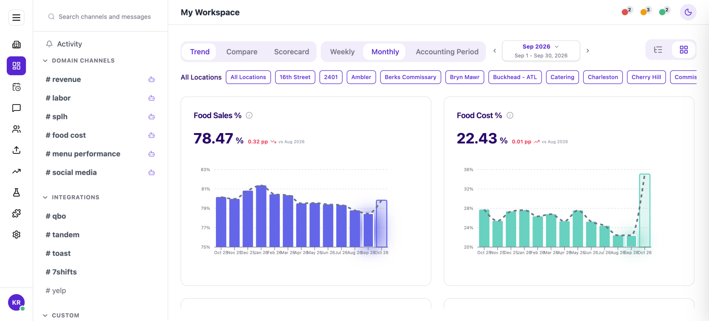
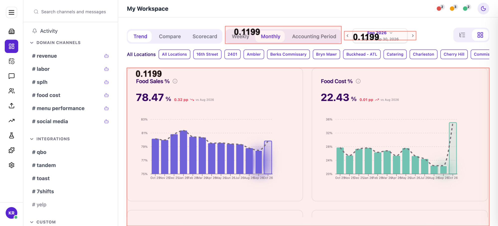

Tested 2026-10-15 07:33:02 using Chrome 155.0.8059.40 .(runtime settings)
This page is snappy to interact with, but slow to paint, prone to layout shifts, loose on best practices and weak on user privacy.

Run with --video to replay what the user saw frame by frame. The verdict and fixes below don't need it.
The page has 1 image (out of 1) without a decoding hint. Add decoding="async" to non-critical images so the browser can decode them off the main thread.
The total JavaScript transfer size is 602.8 kB and the uncompressed size is 2.1 MB. This is totally crazy! There is really room for improvement here.
The page has 5 requests that are missing a cache time. Configure a cache time so the browser doesn't need to download them every time. It will save 3.2 kB the next access.
Timings summary
Run 1 LoadEventEnd median
Choose HAR:
This test ran without --video and --visualMetrics, so there is no video, filmstrip or milestone timeline of how the page rendered. Add them to your run to see the page paint over time and to get visual metrics like First Visual Change and Speed Index.
Rendering was not meaningfully delayed. First paint landed at 408 ms on a 25 ms first byte, with no render-blocking requests. The largest paint followed at 3.524 s.
Want to see how much CSS style-recalculation work delayed FCP and LCP, plus CPU long tasks? Run with --cpu.
Blocking requests delay both paints: the browser renders nothing until they arrive, so they push First Contentful Paint and everything after it, including the largest paint (LCP). Requests that block the parser inside the body stall everything after them in the document. Load JavaScript with defer or async, and keep non-critical CSS off the critical path with media attributes.
None. Nothing except the document itself blocked rendering.
The coach helps you find performance problems on your web page using web performance best practice rules. And gives you advice on privacy and best practices. Tested using Coach-core version 9.2.1.
decodingAsyncThe page has 1 image (out of 1) without a decoding hint. Add decoding="async" to non-critical images so the browser can decode them off the main thread.
Setting decoding="async" on an <img> tells the browser it can decode the image off the main thread, which keeps the page responsive to user interactions while images are being processed. The default ("auto") leaves the choice to the browser. https://developer.mozilla.org/en-US/docs/Web/HTML/Element/img#decoding
javascriptSizeThe total JavaScript transfer size is 602.8 kB and the uncompressed size is 2.1 MB. This is totally crazy! There is really room for improvement here.
A lot of JavaScript often means you are downloading more than you need. How complex is the page and what can the user do on the page? Do you use multiple JavaScript frameworks?
cacheHeadersThe page has 5 requests that are missing a cache time. Configure a cache time so the browser doesn't need to download them every time. It will save 3.2 kB the next access.
The easiest way to make your page fast is to avoid doing requests to the server. Setting a cache header on your server response will tell the browser that it doesn't need to download the asset again during the configured cache time! Always try to set a cache time if the content doesn't change for every request.
largestContentfulPaintLargest contentful paint can be improved 3.524 s. It is in the Google Web Vitals needs improvement range, slower than 2.5 seconds.
Largest contentful paint is one of Google Web Vitals and reports the render time of the largest image or text block visible within the viewport, relative to when the page first started loading. To be fast according to Google, it needs to render before 2.5 seconds and results over 4 seconds is poor performance.
longTasksThe page has 1 CPU long task with the total of 111 ms. The total blocking time is 61 ms . However the CPU Long Task is depending on the computer/phones actual CPU speed, so you should measure this on the same type of the device that your user is using. Use Geckoprofiler for Firefox or Chromes tracelog to debug your long tasks.
Long CPU tasks locks the thread. To the user this is commonly visible as a "locked up" page where the browser is unable to respond to user input; this is a major source of bad user experience on the web today. However the CPU Long Task is depending on the computer/phones actual CPU speed, so you should measure this on the same type of the device that your user is using. To debug you should use the Chrome timeline log and drag/drop it into devtools or use Firefox Geckoprofiler.
avoidScalingImagesThe page has 1 image that are scaled more than 100 pixels. It would be better if those images are sent so the browser don't need to scale them.
It's easy to scale images in the browser and make sure they look good in different devices, however that is bad for performance! Scaling images in the browser takes extra CPU time and will hurt performance on mobile. And the user will download extra kilobytes (sometimes megabytes) of data that could be avoided. Don't do that, make sure you create multiple version of the same image server-side and serve the appropriate one.
optimalCssSizehttps://preprod.tandem.pieq.ai/spas/my-workspace/assets/style-Blv6heTv.css size is 38.6 kB (38613) and that is bigger than the limit of 25 kB. Try to keep each CSS response under 25 kB.
Render-blocking CSS holds up the first paint until it has fully downloaded, parsed and applied, so smaller CSS files mean a faster start. Split your CSS into a small critical bundle inlined or eagerly loaded, with the rest lazy-loaded.
| URL | Transfer | Content |
|---|---|---|
| https://preprod.tandem.pieq.ai/spas/my-workspace/assets/style-Blv6heTv.css | 37.7 KB | 298.0 KB |
mimeTypesThe page has 8 misconfigured mime types.
It's not a great idea to let browsers guess content types (content sniffing), in some cases it can actually be a security risk.
metaDescriptionThe page is missing a meta description.
Use a page description to make the page more relevant to search engines.
urlThe page is using more than two request parameters. You should really rethink and try to minimize the number of parameters. The URL is 152 characters long. Try to make it less than 100 characters.
A clean URL is good for the user and for SEO. Make them human readable, avoid too long URLs, spaces in the URL, too many request parameters, and never ever have the session id in your URL.
cumulativeLayoutShiftYou have a cumulative layout shift score (0.1466) that needs improvements. It is in the Google Web Vitals needs improvement range, shift higher than 0.1. You should manually check the filmstrip or video and check if it will affect the user.
Cumulative Layout Shift measures the sum total of all individual layout shift scores for unexpected layout shift that occur. The metric is measuring visual stability by quantify how often users experience unexpected layout shifts. It is one of Google Web Vitals.
unnecessaryHeadersThere are 38 responses that sets a server header.
Do not send headers that you don't need. We look for p3p, cache-control and max-age, pragma, server and x-frame-options headers. Have a look at Andrew Betts - Headers for Hackers talk as a guide https://www.youtube.com/watch?v=k92ZbrY815c or read https://www.fastly.com/blog/headers-we-dont-want.
contentSecurityPolicyHeaderSet a Content-Security-Policy header to mitigate cross-site scripting attacks. You can start with a Content-Security-Policy-Report-Only header, which only reports violations rather than blocking them.
A Content-Security-Policy response header tells the browser which sources of script, style, and other content are allowed. The most effective form is a strict CSP using nonces or hashes together with strict-dynamic; the worst is a missing header, with unsafe-inline and unsafe-eval close behind. https://web.dev/articles/strict-csp
crossOriginEmbedderPolicyHeaderSet a Cross-Origin-Embedder-Policy header (typically require-corp or credentialless) on the document response to control cross-origin embedding.
Cross-Origin-Embedder-Policy (COEP) makes the page refuse to load cross-origin subresources unless they explicitly opt in via CORP or CORS. Together with Cross-Origin-Opener-Policy it puts the page in a cross-origin isolated context, which mitigates cross-window side-channel attacks (Spectre) and unlocks high-resolution timers and SharedArrayBuffer. https://developer.mozilla.org/en-US/docs/Web/HTTP/Headers/Cross-Origin-Embedder-Policy
crossOriginOpenerPolicyHeaderSet a Cross-Origin-Opener-Policy header (typically same-origin) on the document response to isolate the page from cross-origin windows.
Cross-Origin-Opener-Policy (COOP) lets a page sever its window-group ties to cross-origin documents that opened it or that it opens. Together with Cross-Origin-Embedder-Policy it puts the page in a cross-origin isolated context, which mitigates cross-window side-channel attacks (Spectre) and unlocks high-resolution timers and SharedArrayBuffer. https://developer.mozilla.org/en-US/docs/Web/HTTP/Headers/Cross-Origin-Opener-Policy
crossOriginResourcePolicyHeaderSet a Cross-Origin-Resource-Policy header (same-origin, same-site or cross-origin) on the document response to limit who may embed it.
Cross-Origin-Resource-Policy (CORP) is a per-response opt-in that tells the browser which origins are allowed to embed the resource. It blocks cross-origin or cross-site no-cors embedding (img, script, iframe, etc.) and is one of the building blocks of cross-origin isolation. https://developer.mozilla.org/en-US/docs/Web/HTTP/Headers/Cross-Origin-Resource-Policy
nelHeaderSet a NEL header (paired with Reporting-Endpoints) to collect connection-level error reports from the field.
The NEL (Network Error Logging) response header tells the browser to record connection-level failures (DNS, TLS, HTTP errors) and ship them to a reporting endpoint. NEL pairs with the Reporting-Endpoints / Report-To header — the page declares the endpoint group and NEL points at it. Together they give you visibility into errors that never reach your origin server. https://developer.mozilla.org/en-US/docs/Web/HTTP/Headers/NEL
permissionsPolicyHeaderSet a Permissions-Policy header to control which browser features the page can use.
The Permissions-Policy response header (the successor to Feature-Policy) lets a site explicitly opt in or out of powerful browser features such as camera, microphone, geolocation, payment and clipboard. Setting a strict policy reduces the attack surface and limits what embedded third parties can do. https://developer.mozilla.org/en-US/docs/Web/HTTP/Headers/Permissions-Policy
referrerPolicyHeaderSet a referrer-policy header to make sure you do not leak user information.
Referrer Policy is a new header that allows a site to control how much information the browser includes with navigations away from a document and should be set by all sites. https://scotthelme.co.uk/a-new-security-header-referrer-policy/.
reportingEndpointsHeaderSet a Reporting-Endpoints header (or the legacy Report-To header) so CSP reports, NEL data and other Reporting-API events have an endpoint to land at.
The Reporting-Endpoints response header (the successor to Report-To) names the URLs that browsers should POST reports to. Without it, CSP report-to directives, Cross-Origin-Opener-Policy reports, NEL data and other Reporting-API events have nowhere to go. The legacy Report-To header is still accepted for older Chromium versions. https://developer.mozilla.org/en-US/docs/Web/HTTP/Headers/Reporting-Endpoints
strictTransportSecurityHeaderSet a strict transport header to make sure the user always use HTTPS.
The HTTP Strict-Transport-Security response header (often abbreviated as HSTS) lets a web site tell browsers that it should only be accessed using HTTPS, instead of using HTTP. https://developer.mozilla.org/en-US/docs/Web/HTTP/Headers/Strict-Transport-Security.
xContentTypeOptionsHeaderSet X-Content-Type-Options: nosniff on the document response to prevent MIME-sniffing.
X-Content-Type-Options: nosniff prevents browsers from interpreting files as a different MIME type than what is declared in the Content-Type header. This blocks a class of cross-site scripting and content-type confusion attacks and should be set on every response. https://developer.mozilla.org/en-US/docs/Web/HTTP/Headers/X-Content-Type-Options
A snapshot of what the browser actually built for this page: the document, how big and deep the DOM tree is and what it kept in storage. Big, deep trees are slower to style and lay out, so the counts Chrome warns about carry a flag.
Document
What the page says it is and how large it rendered.
DOM structure
How much markup the browser has to build, style and lay out.
What the page stored on the client, and the network it was tested on.
Data collected using
Coach-core version 9.2.1. With updated code from
Webappanalyzer 2026-05-04. Use
--browsertime.firefox.includeResponseBodies html or
--browsertime.chrome.includeResponseBodies html to help Wappalyzer find more information about technologies used.
Data from run 1
When the page main content is rendered, collected via the Largest Contentful Paint API. Read more about Largest Contentful Paint.
body > div#root > div > div:eq(1) > main > div:eq(0) > main > div:eq(0) > div > div:eq(1) > div:eq(2) > div > div > div > div:eq(1) > div > div > div > div:eq(1) > div:eq(0) > span:eq(0)
The LCP element is highlighted in the screenshot. If nothing is highlighted the element was removed before the screenshot or the LCP API couldn't find it.
How much the page's content shifts as it loads, collected via the Cumulative Layout Shift API.
One shift is 82% of your 0.147 CLS. div:eq(2) moved at 2.174 s. Reserve space for whatever renders into that spot, a fixed height or an aspect-ratio box, so later content stops pushing the page around.
Worst first, showing shifts of 0.01 and up. Each percentage is that shift's exact share of the score.
body > div#root > div > div:eq(1) > main > div:eq(0) > main > div:eq(0) > div > div:eq(1) > div:eq(0) > div:eq(0) > div:eq(2)body > div#root > div > div:eq(1) > main > div:eq(0) > main > div:eq(0) > div > div:eq(1) > div:eq(0) > div:eq(0) > div:eq(4)
Elements that shifted by more than 0.01 are highlighted in the screenshot. If an element shifted outside the viewport, it won't appear here. Check the video or filmstrip to see the shift.
There are no custom configured scripts.
There are no custom extra metrics from scripting.
How the page is built.
| Header | Value |
|---|---|
age | 20 |
cache-control | no-cache, s-maxage=31536000, stale-while-revalidate=600 |
content-encoding | br |
content-type | text/html |
date | Thu, 15 Oct 2026 02:02:43 GMT |
etag | W/"5fd4c0524e18a523e82943d6321cad47" |
last-modified | Wed, 14 Oct 2026 13:49:21 GMT |
server | AmazonS3 |
vary | Accept-Encoding |
via | 1.1 440db74cad7e7ff55da1ebcfc680bc02.cloudfront.net (CloudFront) |
x-amz-cf-id | kQbApY5oRO6DFHE43otvnawglWAssKQtynqGN53aWU5JCrA1rMgXbw== |
x-amz-cf-pop | MAA50-P2 |
x-amz-server-side-encryption | AES256 |
x-cache | Hit from cloudfront |
Transfer size667.0 KB
Content size2.4 MB
Requests61
| Content | Header Size | Transfer Size | Content Size | Requests |
|---|---|---|---|---|
| html | 0 b | 2.4 KB | 7.5 KB | 1 |
| css | 0 b | 47.2 KB | 350.5 KB | 2 |
| javascript | 0 b | 588.7 KB | 2.0 MB | 34 |
| image | 0 b | 10.2 KB | 9.8 KB | 1 |
| json | 0 b | 18.5 KB | 106.9 KB | 15 |
| other | 0 b | 0 b | 0 b | 8 |
| Total | 0 b | 667.0 KB | 2.4 MB | 61 |
| Domain | Total download time | Transfer Size | Content Size | Requests |
|---|---|---|---|---|
| preprod.tandem.pieq.ai | 1.443 s | 648.5 KB | 2.3 MB | 38 |
| preprod.api.pieq.ai | 6.284 s | 16.0 KB | 105.7 KB | 20 |
| web.analytics.pieq.ai | 985 ms | 2.5 KB | 1.2 KB | 3 |
| type | min | median | max |
|---|---|---|---|
| Expires | 0 seconds | 1 year | 1 year |
| Last modified | 1 minute | 4 minutes | 5 days |
Includes requests done after load event end.
| Content | Transfer Size | Requests |
|---|---|---|
| html | 0 b | 0 |
| css | 47.2 KB | 2 |
| javascript | 588.7 KB | 34 |
| image | 10.2 KB | 1 |
| font | 0 b | 0 |
| favicon | 0 b | 0 |
| json | 18.5 KB | 15 |
| other | 0 b | 8 |
| Total | 664.7 KB | 60 |
Includes requests done after DOM content loaded.
| Content | Transfer Size | Requests |
|---|---|---|
| html | 0 b | 0 |
| css | 47.2 KB | 2 |
| javascript | 588.7 KB | 34 |
| image | 10.2 KB | 1 |
| font | 0 b | 0 |
| favicon | 0 b | 0 |
| json | 18.5 KB | 15 |
| other | 0 b | 8 |
| Total | 664.7 KB | 60 |
--enableProfileRun to see where main-thread time went, blocking time and CPU cost per script, module and function, forced reflows and frame stability. The data is collected in one extra run, so the timing metrics of your measured runs stay untouched.Tasks ≥ 50 ms blocking the main thread, collected via the Long Task API.
A long animation frame (LOAF) is a frame that took ≥ 50 ms from input to the next paint. The part beyond the threshold is blocking time, the number that hurts Interaction to Next Paint and Total Blocking Time. Break long tasks up (scheduler.yield(), smaller chunks) or move the work off the main thread. Read more about the Long Animation Frames API.
| Script | Frames | Time running | Blocking (share by run time) | Forced style & layout | Triggered by |
|---|---|---|---|---|---|
| _virtual_mf___mfe_internal__host_spa__mf_owner__1__loadShare__react_mf_2_dom_mf_1_client__loadShare__.js-BWaX8WLx.js | 2 | 144.6 ms | 62.4 ms | 47.2 ms | event handler, timer or animation callback |
A frame's blocking time is split between its scripts by their share of the frame's work, capped at each script's own run time — blocking from work no script owns (HTML parsing, browser internals) stays unattributed. The per-script blocking view below uses the same attribution.
3 more long frames carried no blocking time (nothing ran past the 50 ms threshold) — long, but harmless to INP and TBT.
How much each script blocked the main thread, derived from the Long Animation Frame API. Each frame's blocking time is split between its scripts by their share of the frame's work, capped at each script's own run time — blocking from work no script owns (HTML parsing, browser internals) is not attributed (older data credits the script that started the frame). The closest answer to "which script should I fix to improve TBT" the platform exposes.
Each long animation frame reports how much time each script spent forcing synchronous style and layout, i.e. JavaScript reading layout-triggering properties mid-execution. Same actionable answer as forced reflows above but measured directly by the browser instead of inferred from the trace.
Third party requests categorised by Third party web version 0.29.2.
No third-party requests detected
Every request on this page resolved to a first-party domain. There are no entries in Third party web to attribute, no third-party tools to enumerate, and no third-party cookies set. If you expected to see entries here you can fine-tune the first-party domain list with --firstParty.
Calculated using .*pieq.* (use --firstParty to configure).
| Content | Header Size | Transfer Size | Content Size | Requests |
|---|---|---|---|---|
| html | 0 b | 2.4 KB | 7.5 KB | 1 |
| css | 0 b | 47.2 KB | 350.5 KB | 2 |
| javascript | 0 b | 588.7 KB | 2.0 MB | 34 |
| image | 0 b | 10.2 KB | 9.8 KB | 1 |
| font | 0 b | 0 b | 0 b | 0 |
| favicon | 0 b | 0 b | 0 b | 0 |
| json | 0 b | 18.5 KB | 106.9 KB | 15 |
| other | 0 b | 0 b | 0 b | 8 |
| Total | N/A | 667.0 KB | 2.4 MB | 61 |